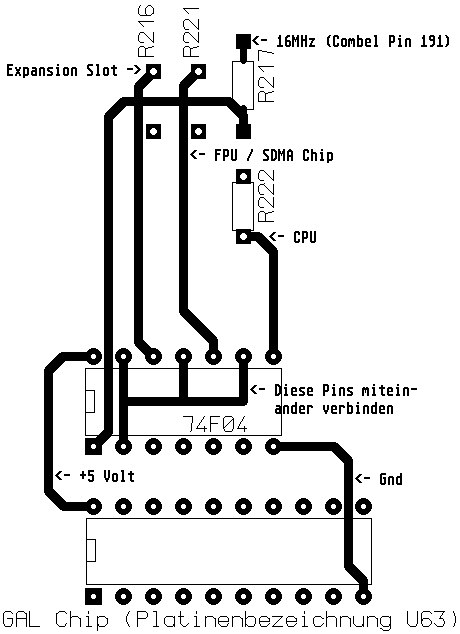

Previous
Next
TOC
So und hier das ganze nochmal direkt als 300DPI Bild

Anmerkung: Wird ein CPU-Beschleunigermodul eingebaut, muß das 16Mhz
Taktsignal entweder an Pin 8 des 74F04 abgegriffen werden oder an
R217 direkt! Welcher Abgreifpunkt verwendet wird, hängt von der
Gatterlaufzeit (Schnelligkeit des GAL Chips) des Beschleunigermo-
dules ab (ausprobieren ist hier leider angesagt).
Ist das Problem immer noch nicht weg, den Draht von R221 zum 74F04
IC kappen und ENTWEDER die beiden Lötpads direkt mit Lötzinn ver-
binden oder den originalen 33 Ohm SMD-Widerstand wieder einlöten.
Oder über den Draht zu R221 eine oder mehrere Ferritperle(n) zie-
hen, hatte man vorher einen PowerUp2 Beschleuniger im Computer kann
man natürlich diese verwenden.
Oder den rechten Anschluß eines 500 Ohm Potentiometers an Masse an-
löten. An den mittleren Anschluß des Poti kommt die Drahtverbindung
zum oberen Lötpad von R221 und den linken Potianschluß mit dem
oberen Lötpad von R217 verbinden.
weiterblättern
Kapitel Der Falcon030 Clockpatch, Seite 7